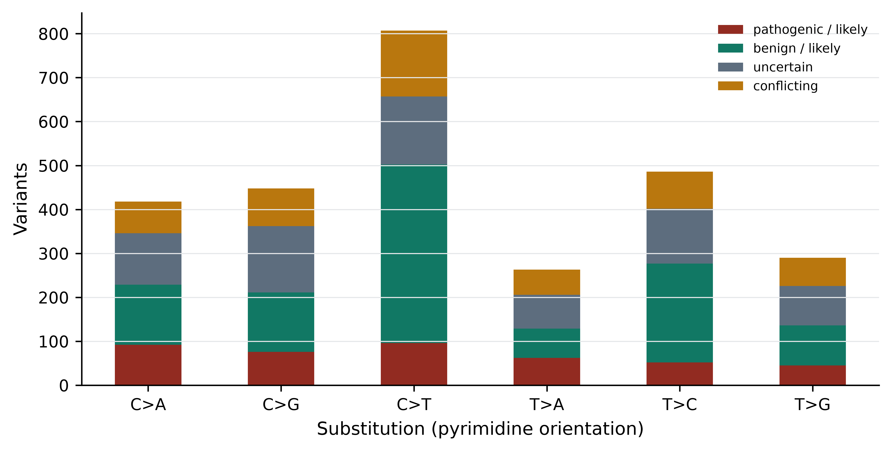
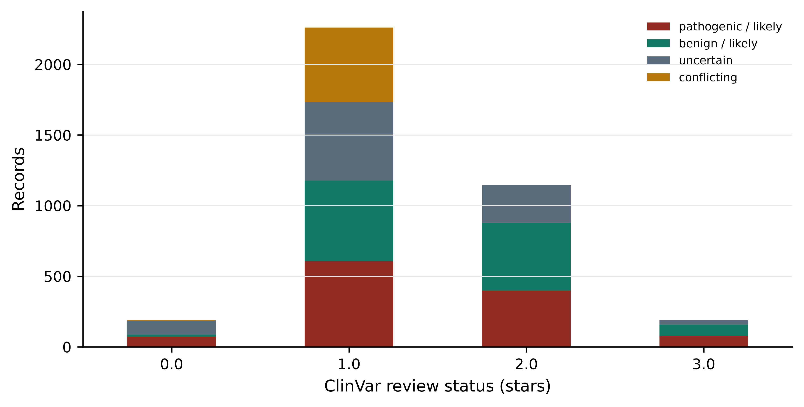
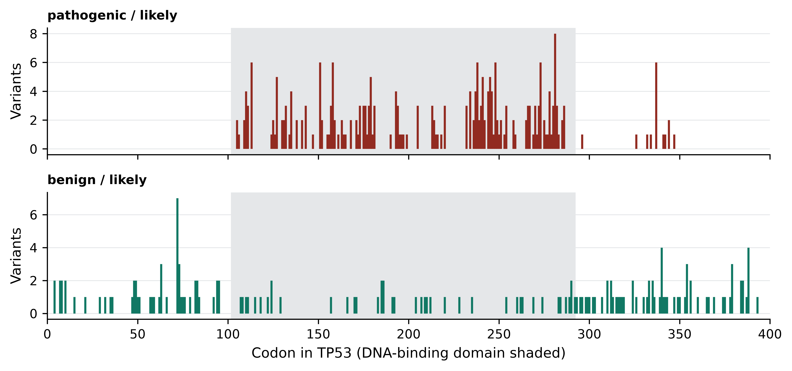

import sys; sys.path.insert(0, "..")
from pybfx import book_data, style, PALETTE
style()
import numpy as np
import pandas as pd
import matplotlib.pyplot as plt13 Bioinformatics in disease and healthcare
After working through this chapter you will be able to
- distinguish somatic from germline variation and driver from passenger mutations, and state the statistical logic that separates them
- explain what a mutational signature is and what kind of claim it supports
- parse a clinical variant file and summarise its clinical significance, consequence and review-status structure
- map a genomic variant to a codon and a protein domain, and test whether pathogenic variants concentrate there
- apply the ACMG/AMP evidence codes to a real variant and justify the resulting classification
- distinguish a pathogenic variant from an actionable one, and describe the pharmacogenomic evidence frameworks
- outline a pathogen genomic surveillance workflow and the constraints it meets in practice
Clinical genomics asks a question that research genomics can avoid: what should be done about this person. The analytical steps look familiar — align, call variants, annotate, filter — but the standard of evidence is different, the error modes have consequences for patients, and the output is a classification that somebody will act on. A variant list is not a diagnosis, a significant gene is not a drug target, and a high-scoring prediction is not a clinical finding.
This chapter works through the main settings in which genomic data meets medicine: cancer genomics, rare disease diagnosis, clinical variant interpretation, pharmacogenomics and pathogen surveillance. The computational work uses the bundled ClinVar slice for TP53 (data/variants/tp53_clinvar.vcf, 3,888 records on GRCh38), the UniProt record for human p53 (data/proteins/P04637.txt), and the RefSeq transcript data/sequences/TP53-NM_000546.6.gb. From those three files you will build a variant table, translate genomic coordinates into codons and amino acid changes, show that pathogenic missense variants concentrate in the DNA-binding domain, and reconstruct the evidence for a real clinical classification.
TP53 is the right gene for this. It is the most frequently mutated gene in human cancer, it causes a dominantly inherited cancer predisposition syndrome when disrupted in the germline, and its ClinVar entry is unusually well curated, including variants assessed by an expert panel. It is also the gene whose interaction network and structure appear elsewhere in this book, so the same protein is seen from four directions.
This chapter is not clinical guidance
Nothing here constitutes medical advice, and no analysis in this chapter should be used to interpret a variant for a patient. Clinical variant interpretation is performed by accredited diagnostic laboratories operating under formal quality systems, with validated pipelines, documented evidence review and multidisciplinary sign-off, and the result is communicated by a qualified clinician or genetic counsellor who can place it in the context of the person’s history, family and options. The worked examples below are teaching reconstructions of published classifications, not independent clinical assessments.
13.1 Setting up
13.2 Somatic and germline variation
A germline variant is present in every nucleated cell of the body, inherited from a parent or arising in the gamete, and is transmissible to children. A somatic variant arises in a single cell during life and is present only in that cell’s descendants — a tumour, a clonal patch of skin, a haematopoietic clone.
The distinction drives everything downstream. Germline variants are called by comparing a sample with the reference genome and are expected at an allele fraction near 0.5 (heterozygous) or 1.0 (homozygous). Somatic variants are called by comparing a tumour sample with a matched normal sample from the same person, and their allele fraction varies continuously with how much of the tumour carries them and how much normal tissue contaminates the biopsy — a subclonal variant in a 40% tumour might sit at 0.08. Calling somatic variants without a matched normal leaves germline variants in the output, which is a common and consequential error.
The ethical consequences differ too. A germline finding is information about relatives who did not consent to be tested. A somatic finding is about the tumour, except when the tumour analysis incidentally reveals a germline variant — which happens often, and which every tumour-sequencing consent process must anticipate.
The bundled ClinVar file is parsed once into a pandas data frame (McKinney 2010) and used for the rest of the chapter.
def read_clinvar(path):
"""Parse a ClinVar VCF into a DataFrame, expanding the INFO column."""
records = []
with open(path) as handle:
for line in handle:
if line.startswith("#"):
continue
chrom, pos, ident, ref, alt, _, _, info = line.rstrip("\n").split("\t")
fields = dict(item.split("=", 1) for item in info.split(";") if "=" in item)
records.append({
"pos": int(pos), "variation_id": ident, "ref": ref, "alt": alt,
"clnsig": fields.get("CLNSIG", ""),
"review": fields.get("CLNREVSTAT", ""),
"consequence": fields.get("MC", "").split(",")[0].split("|")[-1],
"variant_type": fields.get("CLNVC", ""),
"disease": fields.get("CLNDN", ""),
"af_tgp": float(fields["AF_TGP"]) if "AF_TGP" in fields else np.nan,
})
return pd.DataFrame(records)
variants = read_clinvar(book_data("variants", "tp53_clinvar.vcf"))
print(f"{len(variants):,} ClinVar records for TP53")
#> 3,888 ClinVar records for TP53
print(variants[["pos", "ref", "alt", "clnsig", "consequence"]].head(3).to_string(index=False))
#> pos ref alt clnsig consequence
#> 7668434 T G Benign 3_prime_UTR_variant
#> 7668440 T C Likely_benign non-coding_transcript_variant
#> 7668449 A C Uncertain_significance 3_prime_UTR_variant13.3 Drivers, passengers and the resources that find them
A tumour genome carries thousands of somatic mutations, and almost all of them are irrelevant. A driver mutation confers a selective advantage on the cell that carries it; a passenger is carried along because it happened to be in a cell that acquired a driver. Both are real mutations. Only drivers are mechanistically interesting, and only some drivers are therapeutically relevant.
The statistical logic of driver identification is a comparison against a background mutation rate. If mutations accumulate at a rate determined by replication errors and exposure, then the expected number of mutations in a gene depends on its length, its base composition, its replication timing and the local mutational processes. A gene that carries far more mutations than that expectation across a cohort has been under positive selection. Three refinements make this work in practice.
The background rate varies enormously. Mutation rate differs by orders of magnitude across the genome with replication timing and chromatin state, and across patients with exposure and repair capacity. A method that assumes a uniform rate reports long, late-replicating genes as drivers; this produced a generation of false positives in early cancer genome studies.
Position matters as much as count. Oncogenes are activated by specific substitutions at specific residues, so their mutations cluster at a handful of codons. Tumour suppressors are inactivated by anything that breaks the protein, so their mutations are dispersed and enriched for nonsense, frameshift and splice variants. Clustering and consequence-type enrichment are therefore evidence of selection in their own right, and you will measure both in this chapter.
Recurrence across patients is the signal. One patient with a mutated gene is an anecdote. The statistical power comes from cohorts, which is why the public cancer genome resources matter.
Four resources carry most of the field. The Cancer Genome Atlas (TCGA) profiled more than 10,000 tumours across 33 cancer types with matched normals and multi-omic assays (Weinstein et al. 2013), and remains the reference cohort for most tumour types — including the muscle-invasive bladder cancer cohort whose molecular subtypes were defined from it (Robertson et al. 2017). The Pan-Cancer Analysis of Whole Genomes (PCAWG), from the International Cancer Genome Consortium, extended this to whole genomes and so to the non-coding and structural variation that exome sequencing cannot see (Aaltonen et al. 2020). COSMIC curates somatic mutations from the literature and from these cohorts, and maintains the Cancer Gene Census of genes with documented causal roles (Tate et al. 2018). cBioPortal provides a query-and-visualise interface over most published cohorts and is the fastest route from a gene name to its mutation profile across thousands of tumours (Cerami et al. 2012).
A mutated gene is not a driver
Finding your favourite gene mutated in a tumour cohort means almost nothing on its own. Before claiming a driver role, check it against the Cancer Gene Census, check whether mutations cluster positionally or skew towards loss of function, check the gene’s length and replication timing, and check whether the signal survives in an independent cohort. Most genes reported as novel cancer genes before background-rate modelling matured did not survive those checks.
13.4 Mutational signatures and clonal evolution
Each mutational process leaves a characteristic pattern. Ultraviolet light produces C>T substitutions at dipyrimidines; tobacco smoke produces C>A transversions; defective mismatch repair produces small insertions and deletions at repeats; APOBEC enzymes produce clustered C>T and C>G at TCW motifs. A mutational signature is the probability distribution over mutation types that one such process generates, and the standard representation uses 96 classes: six substitution types in pyrimidine orientation, each in 16 trinucleotide contexts. A tumour’s observed spectrum is modelled as a mixture of signatures, and the fitted weights estimate how much each process contributed (Alexandrov et al. 2020).
The chapter’s data cannot demonstrate signature fitting honestly — ClinVar holds ascertained germline variants, not a somatic catalogue, and trinucleotide context needs the reference genome, which is not bundled. What it can demonstrate is the first step of the construction: collapsing substitutions into the six pyrimidine-oriented classes.
complement = {"A": "T", "C": "G", "G": "C", "T": "A"}
def pyrimidine_class(ref, alt):
"""Express a substitution with a pyrimidine reference base, as signatures do."""
if ref in "CT":
return f"{ref}>{alt}"
return f"{complement[ref]}>{complement[alt]}"
snvs = variants[(variants.variant_type == "single_nucleotide_variant")
& variants.ref.isin(list("ACGT"))
& variants.alt.isin(list("ACGT"))].copy()
snvs["substitution"] = [pyrimidine_class(r, a) for r, a in zip(snvs.ref, snvs.alt)]
print(f"{len(snvs):,} single-nucleotide variants")
#> 2,744 single-nucleotide variants
print(snvs.substitution.value_counts().to_string())
#> substitution
#> C>T 810
#> T>C 489
#> C>G 454
#> C>A 424
#> T>G 296
#> T>A 271Why six classes rather than twelve? Because a C>T change on one strand is a G>A change on the other, and a variant caller reporting the plus strand would split one biological process across two categories. Collapsing to the pyrimidine reference removes an arbitrary strand convention.
The spectrum here is dominated by C>T, which in germline data reflects deamination of methylated cytosine at CpG dinucleotides — the dominant source of human germline point mutation — overlaid on ClinVar’s ascertainment, which collects variants that somebody chose to submit. Figure 13.1 shows the spectrum split by clinical class, and the split is instructive.
def clinical_class(label):
if label.startswith(("Pathogenic", "Likely_pathogenic")):
return "pathogenic / likely"
if label.startswith(("Benign", "Likely_benign")):
return "benign / likely"
if label.startswith("Uncertain"):
return "uncertain"
if label.startswith("Conflicting"):
return "conflicting"
return "other"
variants["class"] = variants.clnsig.map(clinical_class)
snvs["class"] = snvs.clnsig.map(clinical_class)
spectrum = pd.crosstab(snvs.substitution, snvs["class"])
spectrum = spectrum[["pathogenic / likely", "benign / likely", "uncertain",
"conflicting"]]
fig, ax = plt.subplots(figsize=(7, 3.6))
spectrum.plot(kind="bar", stacked=True, ax=ax,
color=[PALETTE[3], PALETTE[1], PALETTE[7], PALETTE[2]])
ax.set_xlabel("Substitution (pyrimidine orientation)")
ax.set_ylabel("Variants")
ax.grid(axis="x", visible=False)
ax.legend(fontsize=7, title=None)
plt.xticks(rotation=0)
#> (array([0, 1, 2, 3, 4, 5]), [Text(0, 0, 'C>A'), Text(1, 0, 'C>G'), Text(2, 0, 'C>T'), Text(3, 0, 'T>A'), Text(4, 0, 'T>C'), Text(5, 0, 'T>G')])
fig.tight_layout()
Heterogeneity and clonal evolution
A tumour is not one genome. It is a population of related clones, descended from a common ancestral cell, differing by the mutations each lineage acquired since divergence. Intratumour heterogeneity has direct clinical consequences: a single biopsy samples one region and may miss the clone that matters; a therapy that eliminates the dominant clone selects for a resistant minor clone that was present before treatment began; and a resistance mutation found at relapse was often detectable, at low allele fraction, in the pre-treatment sample.
Computationally, clonal structure is reconstructed from the distribution of variant allele fractions, corrected for tumour purity and local copy number. Mutations at similar corrected fractions are grouped into clusters interpreted as clones, and their nesting gives a phylogeny of the tumour. The inference is delicate — purity estimates, copy number and sequencing depth all propagate into it — and the number of clones a method reports depends heavily on depth. Deeper sequencing finds more clones, which means the number is a property of the experiment as much as of the tumour.
13.5 Reading a clinical variant file
ClinVar aggregates variant classifications submitted by laboratories, expert panels and researchers, with the evidence and the submitter recorded (Landrum et al. 2017). It is the central public resource for clinical variant interpretation, and reading it correctly means attending to three fields at once: what the variant does to the gene, what it has been classified as, and how much scrutiny that classification received.
print(variants["class"].value_counts().to_string())
#> class
#> pathogenic / likely 1153
#> benign / likely 1144
#> uncertain 956
#> conflicting 532
#> other 103
print()
print(variants.consequence.value_counts().head(8).to_string())
#> consequence
#> missense_variant 1505
#> frameshift_variant 626
#> intron_variant 538
#> non-coding_transcript_variant 259
#> synonymous_variant 220
#> 5_prime_UTR_variant 182
#> nonsense 132
#> splice_acceptor_variant 103Two facts stand out. Pathogenic and benign classifications are almost equally numerous, which is a property of TP53’s intensive curation rather than of genes in general. And 956 records — about a quarter of the file — are variants of uncertain significance (VUS): the evidence is insufficient to classify them either way. The VUS is the central practical problem of clinical genomics, and its rate is far higher in genes and populations that have been studied less.
Review status records how much scrutiny a classification received, and ClinVar expresses it as a star rating.
star_levels = {
"practice_guideline": 4,
"reviewed_by_expert_panel": 3,
"criteria_provided,_multiple_submitters,_no_conflicts": 2,
"criteria_provided,_single_submitter": 1,
"criteria_provided,_conflicting_classifications": 1,
"no_assertion_criteria_provided": 0,
"no_classification_provided": 0,
}
variants["stars"] = variants.review.map(star_levels)
print(pd.crosstab(variants.stars, variants["class"]).to_string())
#> class benign / likely conflicting other pathogenic / likely uncertain
#> stars
#> 0.0 14 2 4 73 99
#> 1.0 573 530 0 605 553
#> 2.0 478 0 0 398 269
#> 3.0 79 0 0 77 35Figure 13.2 displays the same table. The pattern to take away is that confidence is not uniform: 191 TP53 records carry a three-star expert-panel classification, while hundreds rest on a single submitter and 192 carry no assertion criteria at all. A one-star “pathogenic” and a three-star “pathogenic” are not interchangeable, and a pipeline that treats CLNSIG as a boolean discards exactly the information that distinguishes them.
review_table = pd.crosstab(variants.stars, variants["class"])
review_table = review_table[["pathogenic / likely", "benign / likely",
"uncertain", "conflicting"]]
fig, ax = plt.subplots(figsize=(7, 3.6))
review_table.plot(kind="bar", stacked=True, ax=ax,
color=[PALETTE[3], PALETTE[1], PALETTE[7], PALETTE[2]])
ax.set_xlabel("ClinVar review status (stars)")
ax.set_ylabel("Records")
ax.grid(axis="x", visible=False)
ax.legend(fontsize=7, title=None)
plt.xticks(rotation=0)
#> (array([0, 1, 2, 3]), [Text(0, 0, '0.0'), Text(1, 0, '1.0'), Text(2, 0, '2.0'), Text(3, 0, '3.0')])
fig.tight_layout()
Consequence type is the other axis, and for a tumour suppressor it is strongly informative.
loss_of_function = ["nonsense", "frameshift_variant",
"splice_donor_variant", "splice_acceptor_variant"]
lof = variants[variants.consequence.isin(loss_of_function)]
print(pd.crosstab(lof.consequence, lof["class"]).to_string())
#> class benign / likely conflicting other pathogenic / likely uncertain
#> consequence
#> frameshift_variant 0 3 38 513 72
#> nonsense 2 0 3 122 5
#> splice_acceptor_variant 3 2 18 72 8
#> splice_donor_variant 1 1 9 75 14
print(f"\nloss-of-function records classified pathogenic/likely: "
f"{(lof['class'] == 'pathogenic / likely').mean():.1%}")
#>
#> loss-of-function records classified pathogenic/likely: 81.4%
print(f"missense records classified pathogenic/likely: "
f"{(variants[variants.consequence == 'missense_variant']['class'] == 'pathogenic / likely').mean():.1%}")
#> missense records classified pathogenic/likely: 16.9%Variants that truncate the protein are classified pathogenic 81.4% of the time; missense variants only 16.9% of the time. This asymmetry is the ACMG evidence code PVS1 in empirical form: for a gene where loss of function is the disease mechanism, a truncating variant is strong evidence on its own, whereas a missense variant needs its specific effect established.
13.6 Locating variants in a protein domain
ClinVar’s VCF gives genomic coordinates, not protein positions. To ask whether pathogenic variants concentrate in a functional domain, each genomic position must be translated into a codon number, which needs the coding exon structure of the transcript. TP53 lies on the minus strand of chromosome 17, so codon numbering runs from high genomic coordinates to low.
The coding blocks of the MANE Select transcript ENST00000269305 were retrieved once from the Ensembl REST API (Cunningham et al. 2021) and are written out below rather than fetched at build time, so that the book renders offline.
# Not executed at build time: the book must render without network access.
import json, urllib.request
url = ("https://rest.ensembl.org/lookup/id/ENST00000269305"
"?expand=1;content-type=application/json")
transcript = json.load(urllib.request.urlopen(url))
translation = transcript["Translation"]
exons = sorted([(e["start"], e["end"]) for e in transcript["Exon"]], reverse=True)
blocks = [(max(s, translation["start"]), min(e, translation["end"]))
for s, e in exons
if max(s, translation["start"]) <= min(e, translation["end"])]
print(transcript["display_name"], transcript["strand"], transcript["assembly_name"])
print("CDS blocks (desc):", blocks)
print("total CDS nt:", sum(b - a + 1 for a, b in blocks))Run on 15 October 2026, that request returned:
TP53-201 -1 GRCh38
CDS blocks (desc): [(7676521, 7676594), (7676382, 7676403), (7675994, 7676272),
(7675053, 7675236), (7674859, 7674971), (7674181, 7674290), (7673701, 7673837),
(7673535, 7673608), (7670609, 7670715), (7669609, 7669690)]
total CDS nt: 1182The total of 1,182 nucleotides is the check that matters: it equals the length of the CDS feature in the bundled GenBank record, and therefore 393 amino acids plus a stop codon. If the two disagreed, the coordinates would be from a different transcript and every codon number below would be wrong.
from Bio import SeqIO
from Bio.Seq import Seq
transcript_record = SeqIO.read(book_data("sequences", "TP53-NM_000546.6.gb"), "genbank")
coding_sequence = next(f for f in transcript_record.features
if f.type == "CDS").extract(transcript_record.seq)
protein = coding_sequence.translate(to_stop=True)
CDS_BLOCKS = [(7676521, 7676594), (7676382, 7676403), (7675994, 7676272),
(7675053, 7675236), (7674859, 7674971), (7674181, 7674290),
(7673701, 7673837), (7673535, 7673608), (7670609, 7670715),
(7669609, 7669690)]
print(f"CDS: {len(coding_sequence)} nt, protein: {len(protein)} aa, "
f"starts {protein[:6]}")
#> CDS: 1182 nt, protein: 393 aa, starts MEEPQSWith the blocks in descending genomic order, the coding offset of a position is the number of coding bases lying 3’ of it on the transcript, and the codon number follows by integer division.
def coding_offset(position):
"""Zero-based offset of a genomic position within the TP53 CDS, or None."""
offset = 0
for start, end in CDS_BLOCKS: # minus strand: high to low
if start <= position <= end:
return offset + (end - position)
offset += end - start + 1
return None
variants["codon"] = variants.pos.map(
lambda p: None if coding_offset(p) is None else coding_offset(p) // 3 + 1)
missense = variants[variants.consequence == "missense_variant"].copy()
print(f"missense records: {len(missense):,}, "
f"of which inside the CDS: {missense.codon.notna().sum():,}")
#> missense records: 1,505, of which inside the CDS: 1,491Before trusting the mapping, test it. Four TP53 substitutions are documented so widely that they function as a checksum: R175H, R248W, R248Q and R273H. The function below reconstructs the amino acid change from the genomic variant alone, complementing the alleles because the gene is on the minus strand.
def amino_acid_change(position, ref, alt):
"""Reconstruct the protein consequence of a minus-strand SNV."""
offset = coding_offset(position)
if offset is None:
return None
codon_number, position_in_codon = offset // 3 + 1, offset % 3
reference_codon = str(coding_sequence[(codon_number - 1) * 3: codon_number * 3])
if reference_codon[position_in_codon] != complement[ref]:
return None # allele disagrees with transcript
altered = (reference_codon[:position_in_codon] + complement[alt]
+ reference_codon[position_in_codon + 1:])
return (f"{Seq(reference_codon).translate()}{codon_number}"
f"{Seq(altered).translate()}")
for position, ref, alt in [(7675088, "C", "T"), (7674221, "G", "A"),
(7674220, "C", "T"), (7673802, "C", "T"),
(7676154, "G", "C")]:
print(position, f"{ref}>{alt}", "->", amino_acid_change(position, ref, alt))
#> 7675088 C>T -> R175H
#> 7674221 G>A -> R248W
#> 7674220 C>T -> R248Q
#> 7673802 C>T -> R273H
#> 7676154 G>C -> P72RThe first four reproduce R175H, R248W, R248Q and R273H exactly, and the fifth recovers P72R, the common polymorphism at codon 72. The mapping is correct.
Now the question the domain analysis exists to answer. UniProt annotates the p53 DNA-binding domain as residues 102 to 292 — the feature line FT DNA_BIND 102..292 in the bundled record data/proteins/P04637.txt, supported by experimental evidence (Bateman et al. 2022). That is 48.6% of the 393-residue protein. If pathogenic missense variants were distributed without regard to function, 48.6% of them would fall inside it.
from scipy.stats import fisher_exact
DOMAIN_START, DOMAIN_END = 102, 292
in_domain = missense.codon.between(DOMAIN_START, DOMAIN_END)
missense["in_domain"] = in_domain
for group in ["pathogenic / likely", "benign / likely", "uncertain", "conflicting"]:
subset = missense[(missense["class"] == group) & missense.codon.notna()]
print(f"{group:22s} n={len(subset):4d} in DNA-binding domain: "
f"{subset.in_domain.mean():.1%}")
#> pathogenic / likely n= 255 in DNA-binding domain: 94.1%
#> benign / likely n= 161 in DNA-binding domain: 26.1%
#> uncertain n= 615 in DNA-binding domain: 54.3%
#> conflicting n= 448 in DNA-binding domain: 58.0%
def inside_outside(group):
subset = missense[(missense["class"] == group) & missense.codon.notna()]
return [int(subset.in_domain.sum()), int((~subset.in_domain).sum())]
contingency = [inside_outside("pathogenic / likely"),
inside_outside("benign / likely")]
odds, p_value = fisher_exact(contingency)
print(f"\ncontingency [in, out]: {contingency}")
#>
#> contingency [in, out]: [[240, 15], [42, 119]]
print(f"odds ratio {odds:.1f}, Fisher exact p = {p_value:.2e}")
#> odds ratio 45.3, Fisher exact p = 4.30e-5094.1% of pathogenic and likely pathogenic missense variants fall in the DNA-binding domain, against 26.1% of benign ones and the 48.6% expected from its length — an odds ratio of 45.3 with a vanishingly small p-value. Figure 13.3 shows where they sit.
fig, axes = plt.subplots(2, 1, figsize=(8, 3.8), sharex=True)
panels = [("pathogenic / likely", PALETTE[3], axes[0]),
("benign / likely", PALETTE[1], axes[1])]
for group, colour, ax in panels:
per_codon = (missense[missense["class"] == group]
.codon.value_counts().sort_index())
ax.axvspan(DOMAIN_START, DOMAIN_END, color="#E5E7E9", zorder=0)
_, stems, _ = ax.stem(per_codon.index, per_codon.values,
markerfmt=" ", basefmt=" ")
stems.set_color(colour)
ax.grid(axis="x", visible=False)
ax.set_ylabel("Variants")
ax.set_title(group, fontsize=9, loc="left")
axes[1].set_xlabel("Codon in TP53 (DNA-binding domain shaded)")
axes[0].set_xlim(0, 400)
fig.tight_layout()
The upper panel is the structural argument for pathogenicity made visible. p53 works by binding specific DNA sequences and activating transcription; a substitution in the domain that contacts DNA, or in the residues that hold that domain’s fold together, destroys the function. A substitution in the disordered C-terminal region usually does not. This is the empirical content of the ACMG code PM1 — “located in a mutational hot spot or well-studied functional domain without benign variation” — and the analysis above is how a laboratory would justify applying it to a specific gene.
13.7 Rare disease diagnostics
A child presents with developmental delay, seizures and dysmorphic features. Nothing in the pattern matches a textbook syndrome. The family then enters what clinicians call the diagnostic odyssey: a sequence of specialist referrals, single-gene tests, panels and imaging that commonly runs for years and frequently ends without an answer. Exome or genome sequencing compresses the odyssey by testing every gene at once, and currently resolves between a quarter and a half of cases depending on phenotype and prior testing.
The analysis has a standard shape. Trio sequencing — proband plus both parents — is the single most effective design, because it identifies de novo variants directly. A variant present in the child and absent from both parents is a strong candidate when the phenotype is severe, sporadic and reproductively limiting, because such conditions cannot persist in a population by inheritance. The trio also resolves phase: two variants in the same gene matter very differently depending on whether they sit on the same chromosome or on opposite ones.
Filtering then proceeds in roughly this order. Remove variants common in population databases, since a severe, rare, early-onset condition cannot be caused by a variant carried by 1% of people — gnomAD is the standard reference, and reports allele frequencies per ancestry group alongside constraint metrics for every gene (Karczewski et al. 2020). Keep variants predicted to alter the protein or disrupt splicing. Restrict to genes whose known disease associations overlap the phenotype, using OMIM (Amberger et al. 2018) and phenotype ontologies. Apply the inheritance model: de novo, homozygous recessive, compound heterozygous or X-linked. The product is usually between five and fifty candidate variants for manual review.
Each step has a characteristic failure mode, and all of them are ways of discarding the answer.
Population frequency filters fail where the population is unrepresented. If the reference database contains few genomes from the patient’s ancestry group, a locally common benign variant appears rare and survives the filter, while a genuinely rare pathogenic variant may be indistinguishable from population variation. Non-European ancestries remain substantially under-represented in reference databases, which makes diagnostic rates lower and VUS rates higher for those patients (Sirugo, Williams, and Tishkoff 2019; Popejoy and Fullerton 2016). This is a data problem with a clinical consequence, and the response is more diverse reference data, which is what initiatives such as H3Africa were created to produce (Matovu et al. 2014).
Gene panels fail for genes not yet associated with disease. Restricting to known disease genes is efficient and makes the novel-gene case invisible by construction. Re-analysing undiagnosed cases against updated gene–disease knowledge yields new diagnoses every year, which is why unsolved exomes should be revisited rather than closed.
Coverage failures are silent. A variant in a region with no reads is simply absent from the output, and absence looks identical to reference. Exome capture is uneven, GC-rich first exons are frequently poorly covered, and a negative result is only as strong as the coverage behind it.
Structural and non-coding variation is missed. Exome sequencing sees neither deep intronic variants that create splice sites nor most copy number and structural changes. A proportion of unsolved exomes are solved by genome sequencing for exactly this reason.
Check coverage before calling a case negative
Before reporting a negative result, confirm that the genes of interest were actually covered to the laboratory’s threshold across all coding bases. A per-base coverage report over the relevant transcripts takes minutes to produce and converts “no variant found” into a statement with a known sensitivity.
13.8 Classifying a variant under ACMG/AMP
The ACMG/AMP framework is the standard for classifying germline variants for clinical use (Richards et al. 2015). It replaces ad hoc judgement with a set of named evidence codes, each with a strength, combined by stated rules into one of five classes: pathogenic, likely pathogenic, uncertain significance, likely benign, benign.
Pathogenic evidence codes are lettered by strength. PVS1 is very strong, and applies to a null variant — nonsense, frameshift, canonical splice site, initiation codon loss — in a gene where loss of function is an established disease mechanism. PS codes are strong: PS1 (same amino acid change as an established pathogenic variant), PS2 (confirmed de novo with parentage verified), PS3 (well-established functional studies showing a damaging effect), PS4 (significantly increased prevalence in affected individuals). PM codes are moderate: PM1 (located in a mutational hot spot or well-studied functional domain), PM2 (absent or extremely rare in population databases), PM5 (novel missense change at a residue where a different pathogenic missense change has been seen). PP codes are supporting: PP3 (multiple computational lines of evidence predicting a deleterious effect), PP5 (reputable source reports it as pathogenic, now deprecated in practice). Benign codes mirror these: BA1 (allele frequency too high for the disease), BS strong and BP supporting.
Take a real record from the bundled file.
example = variants[(variants.pos == 7674221) & (variants.ref == "G")
& (variants.alt == "A")].iloc[0]
print("ClinVar variation ID:", example.variation_id)
print("protein change: ", amino_acid_change(example.pos, example.ref, example.alt))
print("codon: ", int(example.codon),
"(DNA-binding domain:", DOMAIN_START <= example.codon <= DOMAIN_END, ")")
print("classification: ", example.clnsig)
print("review status: ", example.review)
print("population frequency:", "absent from 1000 Genomes"
if np.isnan(example.af_tgp) else example.af_tgp)
print("recorded conditions: ", example.disease.replace("|", "; ")[:90])This is R248W, ClinVar variation 12347, classified pathogenic with three-star expert-panel review. Reconstructing the evidence, in the order a laboratory would assemble it:
PM1 applies. Codon 248 lies at position 248 of the DNA-binding domain annotated by UniProt, and the analysis in the previous section established that pathogenic missense variants in this gene concentrate there at an odds ratio of 45 against benign ones. Arginine 248 contacts the DNA minor groove directly.
PM2 applies. The record carries no 1000 Genomes allele frequency, and the variant is not observed at appreciable frequency in population databases.
PS3 applies. Transactivation assays across all possible TP53 missense substitutions have established that R248W abolishes sequence-specific transcriptional activation (Kato et al. 2003; Giacomelli et al. 2018). Functional evidence of this quality is unusual; most genes have nothing comparable, which is a large part of why VUS rates are high elsewhere.
PS4 applies in the relevant setting. Codon 248 is among the most frequently mutated positions in human cancer and recurs in Li-Fraumeni families, so its prevalence in affected individuals is far above population expectation.
PP3 applies. Computational predictors agree, though this evidence is supporting and substantially correlated with PM1 — the predictors use domain position and conservation as inputs, so the two codes are not independent.
Two strong plus two moderate codes meet the ACMG combining rule for pathogenic. The classification is not controversial.
Contrast it with the codon 72 record.
polymorphism = variants[(variants.pos == 7676154) & (variants.alt == "C")].iloc[0]
print("protein change:", amino_acid_change(polymorphism.pos, polymorphism.ref,
polymorphism.alt))
print("classification:", polymorphism.clnsig,
"| 1000 Genomes allele frequency:", polymorphism.af_tgp)P72R sits at an allele frequency of 0.543 — the majority allele in the 1000 Genomes sample (Auton et al. 2015). BA1 applies as stand-alone benign evidence: no variant causing a rare dominant cancer predisposition syndrome can be carried by half the population. One frequency observation outweighs any amount of in silico prediction, which is why BA1 is the first filter applied and the most common reason a “damaging” prediction is wrong.
Codes are not independent, and the framework is not an algorithm
Applying PM1, PP3 and PM5 to the same variant often counts one piece of evidence three times, because all three are functions of domain position and conservation. ACMG classification requires judgement about evidence independence, and different laboratories reach different conclusions on the same variant — which is what the 532 conflicting records in this file represent. Gene-specific guidance from ClinGen variant curation expert panels, including the gene-specific specifications for TP53 (Fortuno et al. 2020), exists to reduce exactly this variability.
13.9 Pharmacogenomics and actionability
A variant can be unambiguously pathogenic and completely unactionable. Actionability asks a different question from pathogenicity: is there something a clinician can do differently because of this result. For a germline TP53 variant the action is surveillance — intensified imaging under a Li-Fraumeni protocol — and the avoidance of radiotherapy where alternatives exist. There is no drug that fixes p53. For many pathogenic variants in many genes, the honest answer is that nothing changes except the information available to the family.
Pharmacogenomics is where actionability is clearest, because the variant predicts the response to a specific drug at a specific dose. Four examples carry most of the clinical weight.
| Gene | Drug class | Consequence of the variant |
|---|---|---|
| CYP2D6 | codeine, tamoxifen, many antidepressants | copy number and function vary; poor metabolisers get no analgesia from codeine, ultrarapid metabolisers risk opioid toxicity |
| TPMT | thiopurines (azathioprine, mercaptopurine) | reduced activity causes severe myelosuppression at standard doses |
| HLA-B*57:01 | abacavir | strongly predicts a hypersensitivity reaction that can be fatal |
| DPYD | fluoropyrimidines (5-fluorouracil, capecitabine) | reduced activity causes severe, sometimes fatal toxicity |
Two bodies turn this evidence into practice. PharmGKB curates the literature on gene–drug relationships and assigns levels of evidence (Whirl‐Carrillo et al. 2021). The Clinical Pharmacogenetics Implementation Consortium (CPIC) writes the prescribing guidelines that state, for a given genotype, what the clinician should do (Relling and Evans 2015). The division matters: the first is a knowledge base, the second is actionable guidance with a defined evidence threshold.
Pharmacogenomics also makes the CYP2D6 problem concrete. The gene has structural variation, pseudogene homology and population-specific star alleles, so calling it accurately from short reads is genuinely difficult and the common genotyping arrays miss alleles that are frequent in non-European populations. Accurate pharmacogenomics requires reference data from the population being tested, which returns to the representation problem of the previous section.
The limits of precision medicine
Three limits are worth stating plainly. Most common disease is not monogenic. Polygenic risk scores aggregate thousands of small effects and are useful for population-level stratification, but they predict poorly for individuals and transfer badly across ancestries, because the linkage disequilibrium structure they were fitted in does not hold elsewhere. Genotype is not phenotype. Penetrance for most pathogenic variants is incomplete and often estimated from affected families, which biases it upward — the risk quoted to an unaffected carrier found incidentally is frequently too high. A result is not care. A classification delivered without counselling, surveillance capacity or access to treatment changes nothing, and in health systems where the follow-up pathway does not exist, sequencing can consume resources that would save more lives spent elsewhere.
13.10 Pathogen genomics and surveillance
Pathogen genomics inverts the clinical setting: the genome of interest belongs to the organism causing the disease, sequencing is fast and cheap relative to the organism’s size, and the questions are epidemiological. Is this cluster of cases one outbreak or several? Where did it come from? Is it resistant to the available drugs?
Outbreak investigation rests on the fact that a pathogen accumulates mutations as it transmits. Isolates from the same transmission chain are nearly identical, and the number of single-nucleotide differences between two isolates bounds how closely they can be related. The workflow is consistent across organisms: sequence isolates, align to a reference or assemble, call variants, build a phylogeny, and interpret it alongside epidemiological data. The threshold for “same cluster” is organism-specific — a handful of SNPs for a slowly evolving bacterium, more for an RNA virus — and must be calibrated per pathogen, not borrowed.
Lineage assignment places a new genome within an established nomenclature. For SARS-CoV-2 the Pango system named lineages dynamically as they emerged (Rambaut et al. 2020), and Nextstrain provided the continuously updated phylogenies and visualisations that made the system usable in real time (Hadfield et al. 2017). The general pattern — a curated nomenclature, a tool that assigns a query genome to it, and a public phylogeny for context — now applies to many pathogens.
Phylogenetic epidemiology uses the tree itself to infer transmission. Branch lengths calibrated with sampling dates estimate when lineages diverged; geographic labels on tips allow introductions into a region to be counted and dated. The inferences are only as good as the sampling, which is the recurring weakness: a tree built from unevenly sampled genomes will place the origin of a lineage wherever sequencing capacity was greatest.
Antimicrobial resistance prediction from genotype works by looking for known resistance determinants — acquired genes, point mutations in drug targets — in an assembly or in raw reads, and matching them against curated databases. For some organism–drug combinations the genotype predicts the phenotype well enough for clinical use; for others it does not, because resistance arises through mechanisms the databases do not capture, including efflux regulation and expression changes invisible to a gene-presence search. The honest statement is that genotypic prediction has high negative predictive value for well-characterised mechanisms and should be reported with the specific drug–organism evidence behind it.
# Illustrative shape of a surveillance pipeline; each step is covered elsewhere
# in this book. Not executed here: these tools are not part of the book's
# bundled environment, and the analysis needs isolate genomes the book does not
# ship.
fastp -i isolate_R1.fastq.gz -I isolate_R2.fastq.gz \
-o trimmed_R1.fastq.gz -O trimmed_R2.fastq.gz
bwa mem reference.fasta trimmed_R1.fastq.gz trimmed_R2.fastq.gz \
| samtools sort -o isolate.bam
bcftools mpileup -f reference.fasta isolate.bam \
| bcftools call -mv -Ov -o isolate.vcfRunning surveillance where the pathogens are is a different problem from running it where the computing is. Sequencing capacity across much of Africa expanded rapidly during the COVID-19 pandemic, and the continental analysis of that effort documents both what became possible and what constrained it: uneven sampling, reagent supply chains, and the gap between generating a genome and acting on it (Tegally et al. 2022). Portable sequencing with amplicon protocols made field deployment practical during earlier outbreaks and remains the model for rapid response (Quick et al. 2017). The practical constraints that shape a national surveillance programme are bandwidth for uploading genomes, electricity and cold chain for reagents, trained bioinformaticians who stay, and a reporting pathway that ends with a public health decision rather than a database submission. Metagenomic classification tools such as Kraken 2 make species identification tractable on modest hardware (Wood, Lu, and Langmead 2019), and the growth of regional sequencing networks has been driven as much by training and logistics as by technology.
Genomic data about people is identifiable
Human genomic data is not anonymisable in any strong sense: a few dozen common variants are enough to identify an individual, and surname inference from Y-chromosome haplotypes has been demonstrated on public data (Gymrek et al. 2013). Pathogen sequences from clinical samples can carry host reads. Removing host reads before deposition, and treating variant-level data as identifiable, are minimum practice. The ethics chapter develops the consent and governance obligations that follow.
13.11 Summary
- Germline and somatic variants require different calling strategies, carry different allele fractions, and raise different consent obligations.
- Driver identification is a comparison against a background mutation rate that varies by orders of magnitude; positional clustering and consequence-type skew are independent evidence of selection.
- Mutational signatures summarise the chemistry that produced a mutation, not its functional consequence, and need somatic data with trinucleotide context.
- ClinVar records differ in how much scrutiny they received. 191 of the 3,888 TP53 records carry expert-panel review; 192 carry no assertion criteria.
- A quarter of the TP53 records are variants of uncertain significance, which is the normal state of clinical genomics and worse in understudied genes and populations.
- Truncating variants in TP53 are classified pathogenic 81.4% of the time against 16.9% for missense variants, which is the empirical content of PVS1.
- Mapping genomic coordinates to codons is a prerequisite for domain analysis and must be validated against known variants before it is trusted.
- 94.1% of pathogenic missense variants in TP53 fall in the DNA-binding domain, against 26.1% of benign ones and 48.6% expected from its length.
- ACMG/AMP classification combines named evidence codes of stated strength; frequency evidence such as BA1 outweighs computational prediction.
- Pathogenic and actionable are different properties. Pharmacogenomics is where actionability is clearest, with CPIC guidelines translating genotype into prescribing decisions.
- Pathogen surveillance is limited by sampling, logistics and the reporting pathway more often than by sequencing or analysis.
13.12 Exercises
- Count the ClinVar records in the bundled file whose variant type is a deletion or duplication, and report what fraction of them are classified pathogenic or likely pathogenic.
- Use
amino_acid_changeto determine the protein consequence of the variant at chromosome 17 position 7,673,803 with reference G and alternate A, and state whether it falls in the DNA-binding domain. - Recompute the domain enrichment using the tetramerisation domain (residues 319 to 360, from the UniProt record) in place of the DNA-binding domain. Does the enrichment hold?
- Produce the ten codons carrying the most pathogenic or likely pathogenic missense records, and compare them with the hotspot codons named in the chapter.
- For the 191 expert-panel-reviewed records, tabulate clinical class against molecular consequence. What is absent from this table that is present in the one-star records, and why?
- The chapter applied PM1, PM2, PS3, PS4 and PP3 to R248W. For the variant at position 7,673,802 (C>T), state which of those codes you could support from the bundled data alone and which would require evidence the file does not contain.
- A laboratory reports a novel missense variant at codon 337 as likely pathogenic, citing PM1, PP3 and PM5. Explain why this combination may be weaker than it appears, and state what single additional piece of evidence would most strengthen it.
- An outbreak investigation finds that two isolates differ by three SNPs. A colleague concludes direct transmission between the two patients. List the assumptions this conclusion requires and the data that would test them.
13.13 Solutions
Solutions
1. Structural changes are heavily weighted towards pathogenic classification, because in this gene most of them remove coding sequence.
indels = variants[variants.variant_type.isin(["Deletion", "Duplication"])]
print(f"{len(indels):,} deletion/duplication records; "
f"{(indels['class'] == 'pathogenic / likely').mean():.1%} pathogenic/likely")2. The position is one base from the R273H site and alters the same codon, replacing the same arginine with a cysteine instead of a histidine.
change = amino_acid_change(7673803, "G", "A")
codon_number = coding_offset(7673803) // 3 + 1
print(change, "| codon", codon_number,
"| in DNA-binding domain:", DOMAIN_START <= codon_number <= DOMAIN_END)3. The enrichment reverses. Only 5.5% of pathogenic missense variants lie in the tetramerisation domain against 10.7% expected from its length, while 18.0% of benign ones do. Domain membership is not generic evidence of pathogenicity: it carries weight only where the domain’s function is the disease mechanism, which for TP53 means sequence-specific DNA binding.
tetramer = missense.codon.between(319, 360)
for group in ["pathogenic / likely", "benign / likely"]:
subset = missense[(missense["class"] == group) & missense.codon.notna()]
print(f"{group:22s} in tetramerisation domain: "
f"{tetramer[subset.index].mean():.1%}")
print(f"expected from length: {(360 - 319 + 1) / 393:.1%}")4. The recurrent codons are the canonical TP53 hotspots, and they sit inside the DNA-binding domain apart from codon 337, which lies in the tetramerisation domain and is the site of a founder variant.
hotspots = (missense[missense["class"] == "pathogenic / likely"]
.codon.value_counts().head(10))
print(hotspots.to_string())5. The conflicting category disappears entirely, because resolving disagreement between submitters is precisely what convening a panel achieves. Uncertainty does not disappear: 35 expert-panel records remain classified as uncertain, which is the panel stating that the evidence is insufficient rather than that the evidence is contested. The two are different findings and only the review status distinguishes them.
panel = variants[variants.review == "reviewed_by_expert_panel"]
print(pd.crosstab(panel.consequence, panel["class"]).to_string())6. Position 7,673,802 C>T is R273H. From the bundled data alone you can support PM1 (codon 273 is inside the DNA-binding domain, and the chapter’s analysis establishes the enrichment) and PM2 (no 1000 Genomes frequency is recorded). PS3 requires functional assay results, PS4 requires case–control or cohort prevalence data, and PP3 requires computational predictor scores — none of which are in the VCF. The classification recorded in ClinVar rests on evidence beyond the file.
r273h = variants[(variants.pos == 7673802) & (variants.alt == "T")
& (variants.consequence == "missense_variant")].iloc[0]
print(amino_acid_change(r273h.pos, r273h.ref, r273h.alt),
"|", r273h.clnsig, "|", r273h.review,
"| 1000 Genomes AF:", r273h.af_tgp)7. PM1, PP3 and PM5 are largely functions of the same underlying facts — position within a well-studied domain and conservation at that residue — so counting all three risks triple-counting one piece of evidence. Codon 337 also sits outside the DNA-binding domain, weakening PM1 specifically. The strongest additional evidence would be a functional assay demonstrating loss of transactivation (PS3), or confirmed segregation with disease across an affected family.
8. The conclusion assumes that the mutation rate is known well enough for three SNPs to be inside the plausible range for one transmission; that no unsampled intermediate host or person lies between the two; that within-host diversity has not caused the sampled consensus sequences to differ by more than the transmission bottleneck would imply; that the variant calls are accurate, including in repetitive regions; and that the two samples were not contaminated or mislabelled. Testing them requires an epidemiological link, denser sampling of contacts, within-host variant frequencies rather than consensus sequences alone, and a mutation rate estimated for this organism in this setting.
13.14 Further reading
- Richards et al. (2015) is the ACMG/AMP standard itself; the tables of evidence codes repay reading in full before applying any of them.
- Landrum et al. (2017) describes ClinVar’s data model, including how submissions are aggregated and how review status is assigned.
- Karczewski et al. (2020) presents gnomAD and its constraint metrics, which underpin the frequency and gene-level evidence used in rare disease filtering.
- Alexandrov et al. (2020) is the pan-cancer catalogue of mutational signatures and the reference for what each signature is currently attributed to.
- Aaltonen et al. (2020) reports the pan-cancer whole-genome analysis, and is the clearest demonstration of what whole genomes add over exomes in cancer.
- Relling and Evans (2015) sets out how pharmacogenomic evidence becomes a prescribing guideline, which is the model for clinical translation of any genomic marker.
- Tegally et al. (2022) documents genomic surveillance across Africa during the COVID-19 pandemic, including the operational constraints that analysis papers usually omit.
- Sirugo, Williams, and Tishkoff (2019) is a short, pointed account of how unrepresentative reference data degrades clinical genomics for most of the world’s population.